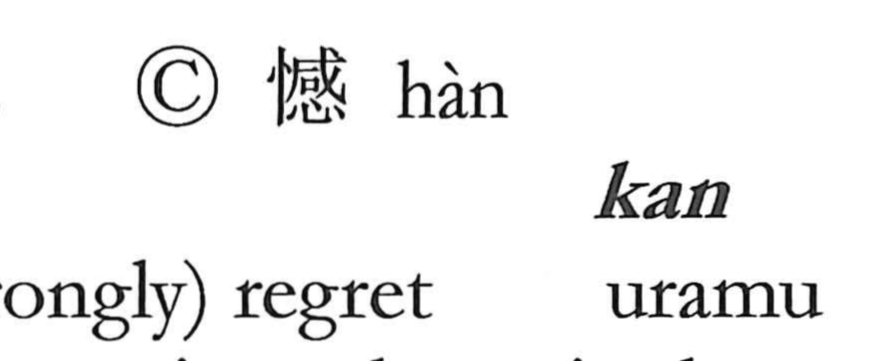

憾

Kun: uramu | On: kan
regret ・ remorse
Explanation
Shirakawa explains 憾 as a phono-semantic character: the heart element 心 combines with 感 (kan) as the phonetic. He reads 感 through ancient ritual imagery—a broadax 戉 placed as a sacred implement on a covenant vessel into which written petitions to the gods were deposited, sealing the prayers and the gods’ answering response. 憾 names the feeling when that response proves insufficient: an inward, self-directed sense of regret. Hence its meaning “to regret” and its on-reading kan. In contrast to 恨, resentment toward another person, and 怨, festering ill will, 憾 expresses a regret borne within oneself.